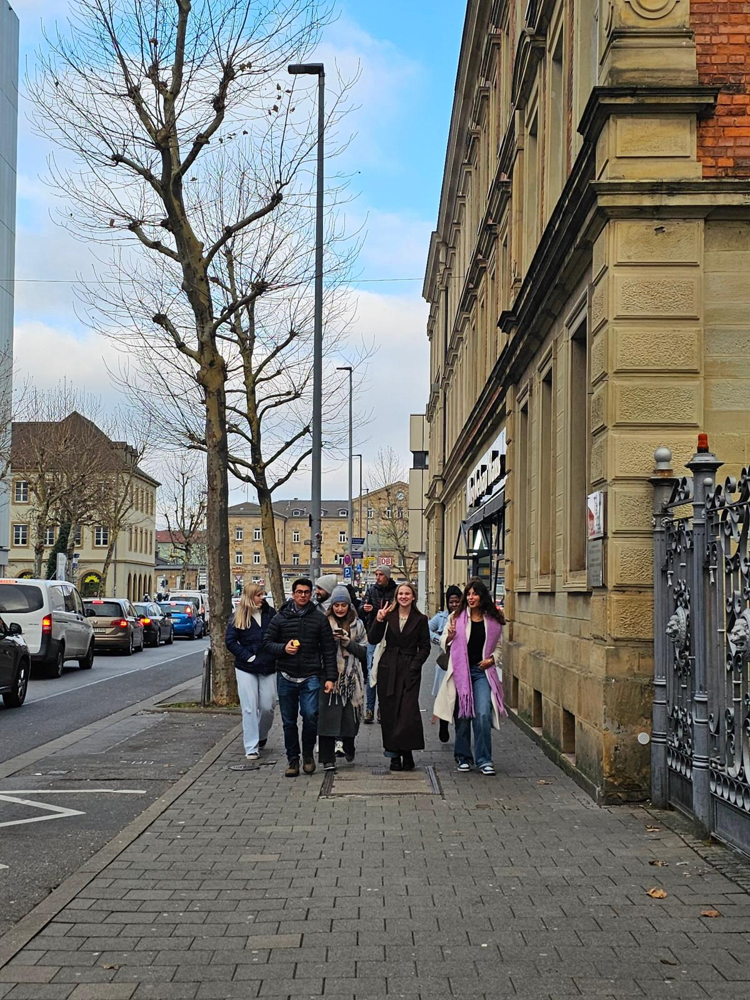
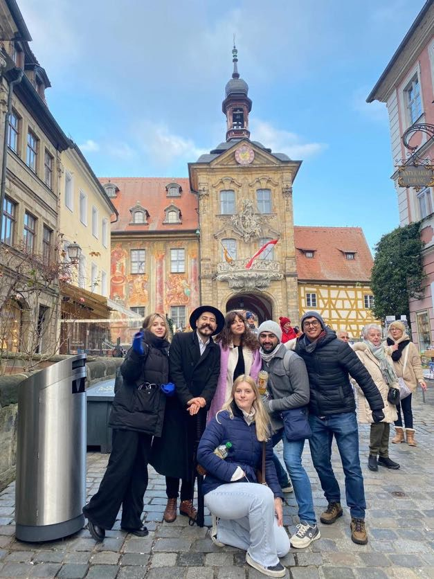
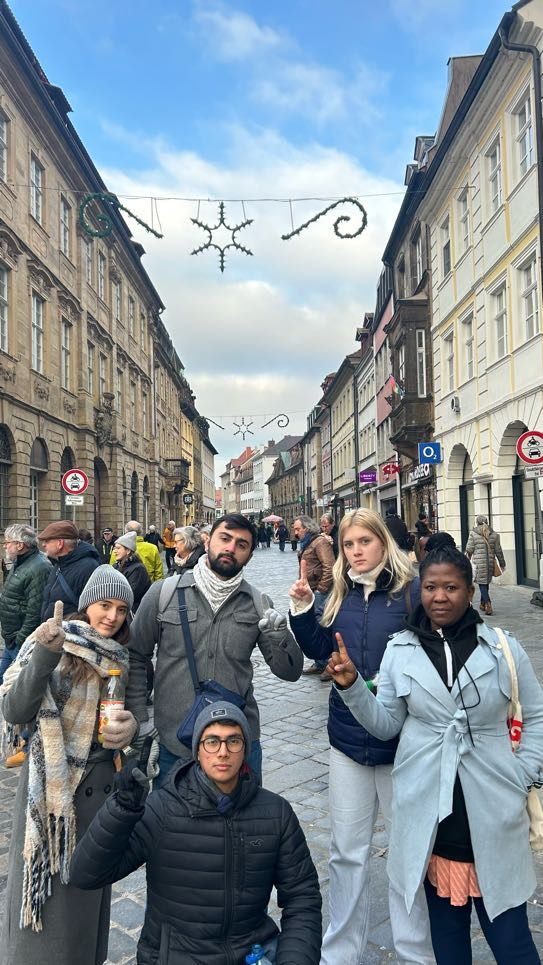

City Tour · Organized by Free European Youth e.V.
Explore the City - Bamberg aims to provide young participants with an immersive understanding of German heritage and urban history. It is designed as a practical cultural resource to help individuals navigate historical landmarks and improve their appreciation of European architectural and social traditions.
The event brings together 13 young enthusiasts to explore the unique streets and UNESCO World Heritage sites of Bamberg. Participants gain firsthand historical knowledge through guided walks, learn how to identify different architectural eras throughout the Old Town, and receive expert insights into the city’s role as a bridge between diverse European cultures.
The session also promotes a collaborative environment by allowing participants to exchange cultural perspectives and brainstorm ideas for youth mobility during group discussions. Organized as an interactive city discovery, the tour supports broader goals of cultural literacy and intercultural dialogue for a more connected future.
The tour produced a measurable shift in how participants approach cultural heritage through active exploration. They developed a specialized set of observational skills applicable to real-world historical research, especially for those focusing on urban development and European integration.g activities, they gained practical knowledge about sustainable water use, eco-friendly habits, and the relationship between climate, policy, and natural resources.
Our young people collaborated with peers from diverse backgrounds, strengthening their cultural literacy and establishing a strong network for future international youth projects. The program resulted in a collective photo gallery of historical landmarks, a shared understanding of Bavarian traditions, and a strategic framework for organizing similar youth-led city explorations. Many of these individuals now serve as cultural ambassadors within their own youth organizations and local communities.
"During the city tour in Bamberg, I met 13 amazing and passionate young people. I learned so much about German history and local architecture while making precious friends and memories. Exploring the hidden gems of this UNESCO city together inspired me to continue my journey in promoting cultural heritage and youth mobility." — Catherine, Germany



Follow our social media or contact us to be informed about future activities.